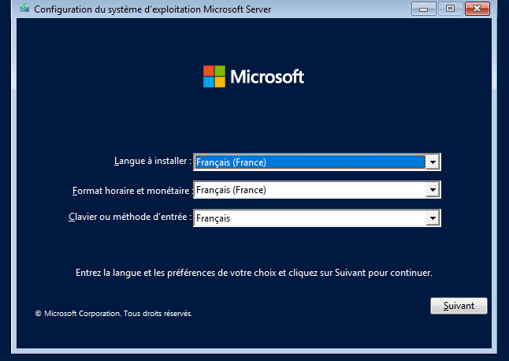
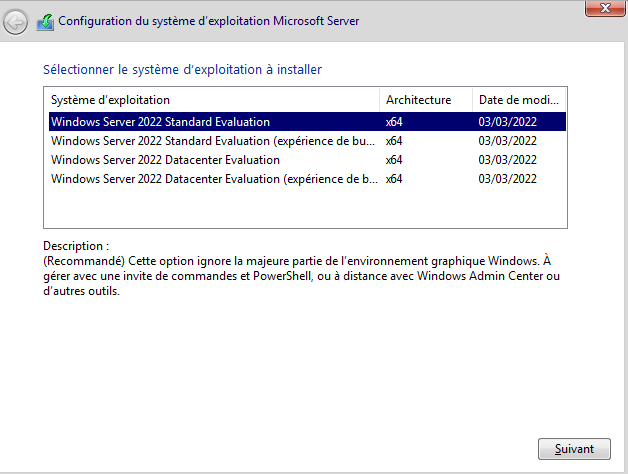
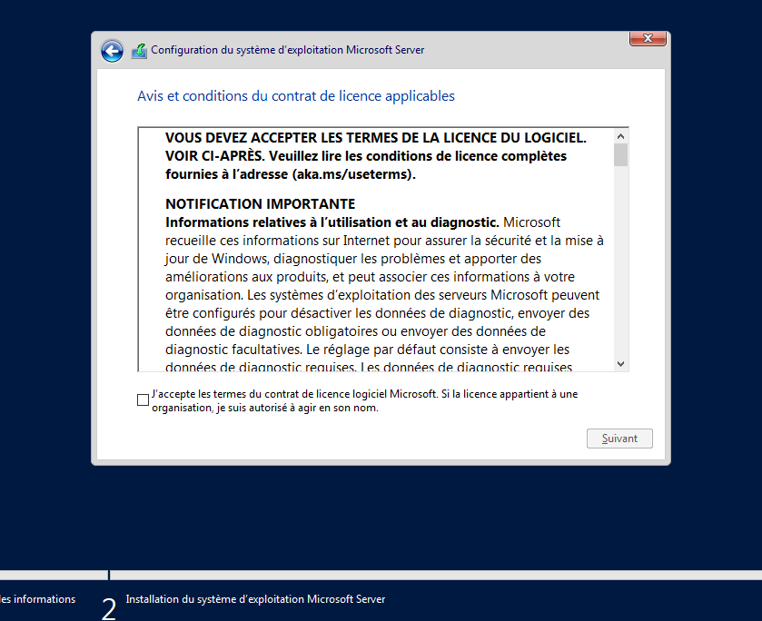
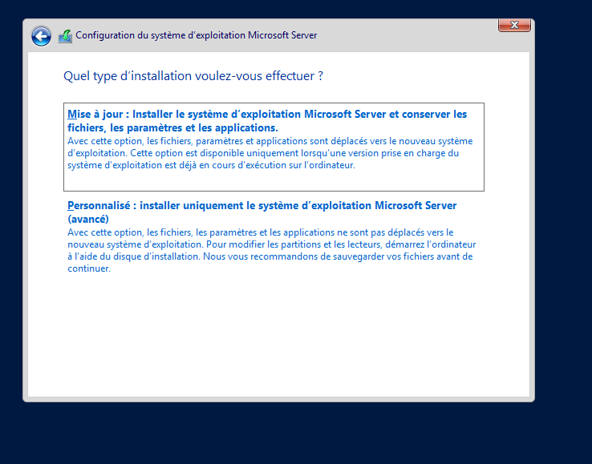
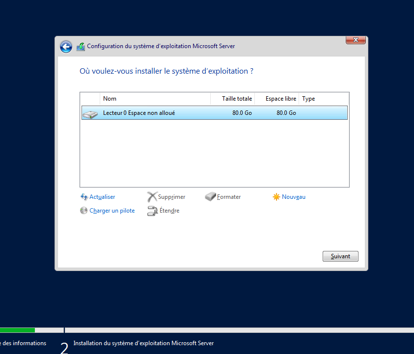
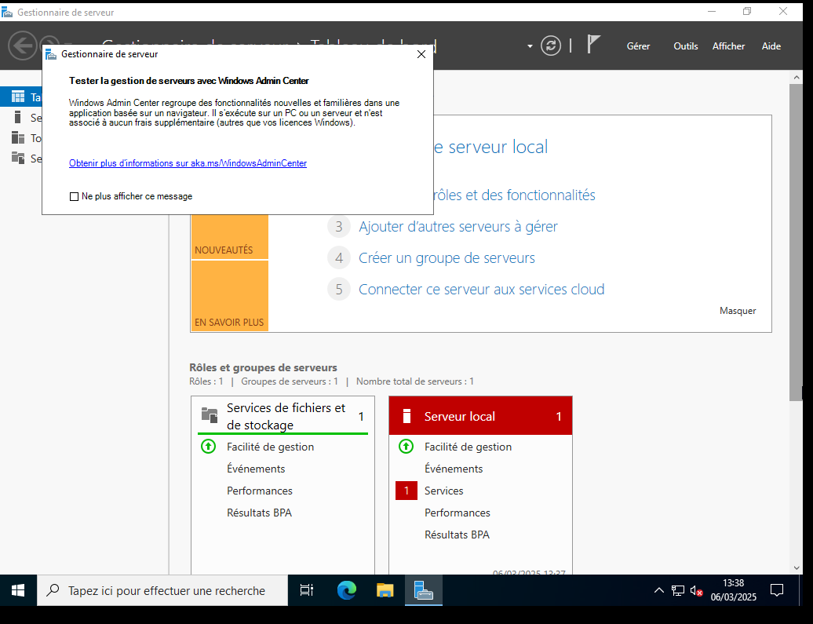

Avant de commencer
Windows Server 2022 est le système d'exploitation serveur de Microsoft. Dans mon infra, j'ai déployé deux VM Windows Server 2022 sur Proxmox : Milky-Way (DC principal, 192.168.10.3) et Andromède (DC secondaire, 192.168.10.4).
Avant l'installation, il faut s'assurer que la VM a au moins 2 vCPU, 4 Go de RAM et 40 Go de disque. On démarre depuis l'ISO Windows Server 2022.
Sélection de la version
L'installeur propose plusieurs éditions. Pour un usage en production avec interface graphique, on choisit Windows Server 2022 Standard Evaluation (avec Expérience de bureau). La version Core n'a pas d'interface graphique — c'est plus léger mais plus complexe à administrer.

Contrat de licence et type d'installation
On accepte le contrat de licence Microsoft. Ensuite, on choisit le type d'installation : Personnalisée pour une installation propre, ou Mise à niveau si on upgrade depuis une version existante. Ici, on fait toujours une installation propre.


Partition et installation
On sélectionne le disque cible et on laisse l'installeur créer les partitions automatiquement. L'installation copie les fichiers, installe les fonctionnalités, puis redémarre plusieurs fois. Ça prend entre 10 et 20 minutes selon les performances de la machine.

Première connexion et Gestionnaire de serveur
Au premier démarrage, Windows demande de définir le mot de passe administrateur. Ensuite, on arrive sur le bureau avec le Gestionnaire de serveur qui se lance automatiquement. C'est à partir de là qu'on va ajouter des rôles (AD DS, DNS, DHCP, etc.).

